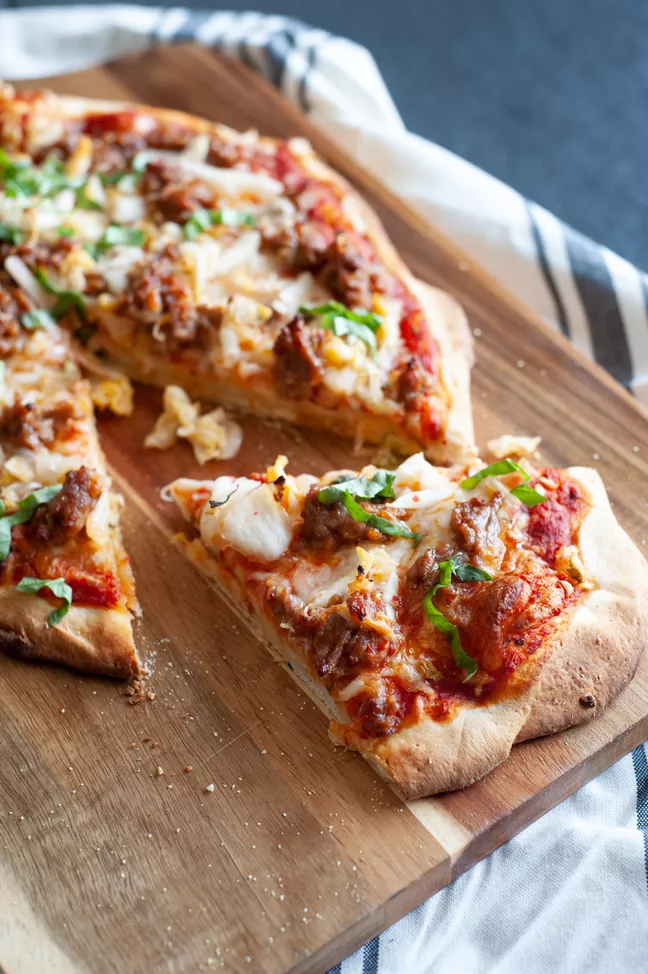

This homemade pizza is easy. Good tomato sauce, shredded mozzarella, crumbled Italian sausage, and plenty of kimchi is all you need. If a little 11-year-old girl from Seoul can do it, so can you!
Although a home oven isn’t quite hot enough to get that perfect crust, a pizza stone retains heat well and can help. Make sure to preheat your oven for at least 30 minutes, which can happen while you assemble the pizza.
If you don’t have a pizza stone, use a large (at least 12-inch) cast iron skillet or a sturdy baking sheet that can withstand high heat. Lightly grease the cast iron skillet with cooking oil before preheating it. If the skillet is smaller than 12 inches, the dough will be thicker, so you’ll have to cook it for a little longer.
You can also grill your pizza if it’s too hot to turn your oven on. Here are instructions on how to grill pizza.
The dough may shrink while you roll it out. Let it rest for 15 minutes before trying again to give the gluten in the dough a chance to relax.
If the dough is refrigerated, let it come to room temperature on your counter for about one hour. Divide the dough in half, place both halves in a large bowl, and cover the bowl with plastic wrap to keep the dough from drying out.
Position the oven rack in the center of the oven, and place a pizza stone or large sheet pan on it. Preheat the oven to 500°F for at least 30 minutes so that the pizza stone gets really hot.
Roughly chop the kimchi into 1/4-inch pieces. Using your hands (wear food-safe gloves, if you wish), squeeze the juices out of the kimchi so the dough doesn’t get soggy. (Don’t toss the liquid! Make this stew with it.)
Dust your countertop lightly with flour. Working with one portion (1 pound) of dough at a time, use a rolling pin to roll it into a 10- to 12-inch circle. You can also spread the dough out with your fingers. Don’t stress about being precise with the size or shape. It doesn’t have to be a perfect circle!
Spread a thin layer of cornmeal on your pizza peel and place the rolled-out dough on top.
Spoon half of the marinara sauce on the dough and evenly spread it to the outer edges with the back of a spoon. Sprinkle half of the cheese over the sauce. Evenly distribute half of the sausage and squeezed kimchi.
Carefully sprinkle some cornmeal onto the preheated pizza stone. Slide the pizza onto it and bake for 8 to 10 minutes, until the crust is golden brown and the sausage is cooked through. While the first pizza cooks, assemble the second pizza with the remaining ingredients.
Remove the pizza from the oven, transfer it onto a cutting board and let it cool for a couple of minutes. Sprinkle with fresh basil, if you wish, and serve. Bake the second pizza while you enjoy the first one.